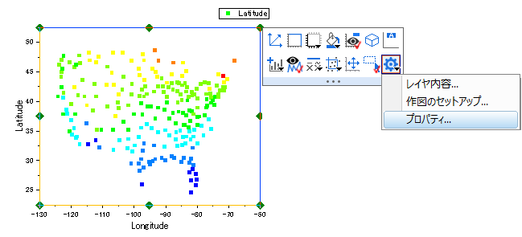
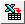

データ選択
GSB-data-selection
このレッスンではグラフのデータ選択の様々な方法について学びます。
複数ワークシートからグラフを作成
- レッスン2: グラフテンプレートとバッチ作図で保存したプロジェクトを開いて始めましょう。いずれかのワークブックを選択し、データ列が選択されていないことを確認してください。もし選択されている場合は、列の外の灰色の領域をクリックすることで選択を解除することができます。
- メニューの作図> 基本の2Dグラフ: 折れ線を選択します。作図のセットアップダイアログが開きます。
- 右側にある
 ボタンをクリックして上部パネルを開きます。既に開いている場合はボタンをクリックする必要はありません。
ボタンをクリックして上部パネルを開きます。既に開いている場合はボタンをクリックする必要はありません。
- パネル左にある利用可能なデータ:ドロップダウンリストでフォルダ中のワークシートを選択します。
 | プロジェクト内のいずれかからワークシートを選択する場合は、ドロップダウンリストでプロジェクト中のワークシートを選択してください。
|
- Shiftキーを押したままシート名がTrial Run 1、Trial Run 2とTrial Run 3の3つすべてのデータを選択します。
- 中央パネルのチェックボックスを使用して、TimeをXにし、PositionをYに設定します。OK ボタンをクリックして、グラフを作成します。
| このダイアログでは、3つ目の下パネルを使用して複数レイヤのグラフでデータを異なるレイヤに適用することも可能です。もしそのパネルが開いている場合は、今回は閉じてしまってからOKボタンをクリックしてグラフを作成してください。
|
- このグラフの凡例を編集しましょう。凡例上で右クリックして凡例：凡例の更新を選択
- 開いたダイアログで凡例の自動更新モードをカスタムに設定します。任意のカスタムフォーマット(@D, @LU etc)編集ボックスの内容をクリアして、
 ボタンをクリックし、メニューから@WS: シート表示名を選択します。
ボタンをクリックし、メニューから@WS: シート表示名を選択します。
- 編集ボックスで文字列@WSの後ろにハイフン-を入力し、再び右側のボタンをクリックします。今度はワークシートで列ヘッダ行Sampleの内容を表示するための@LD"Sample": Sampleを選択します。OKボタンをクリックします。凡例にシート名とSample名が表示されます。
他の列を使用してグラフの色を設定する
- プロジェクトエクスプローラに移動します。上のパネルにあるルートレベルのフォルダ上で右クリックし、新規フォルダ を作成します。
- 新しく作成されたフォルダを右クリックし、 名前の変更を選択して名前をデータ選択に変更します。空のフォルダをクリックして開きます。
- 空のワークシートを作成します。ヘルプ: フォルダを開く: サンプルフォルダを選択して、サンプルフォルダを開きます。このフォルダ内のGraphingサブフォルダにあるUS Mean Temperature.dat ファイルを探します。空のワークシートにファイルをドラッグアンドドロップしてインポートします。
- 米国の主要都市の位置(列LongitudeとLatitude)の散布図と、1年の平均気温(Annual)のカラーマップデータポイントを作図しようと思います。名前がJanuaryの列のヘッダをクリックし、 そのままドラッグして名前がDecemberの列までをすべて選択します。それから右クリックして列を隠す/隠さない: 隠すを選択します。
- Longitude列を選択してから右クリックして列XY属性の設定: X列を選択します。
- 列Latitudeを選択し、左下部のツールバーで散布図ボタンをクリックしてX軸longitude、Y軸latitudeのグラフを作成します。
- グラフ上でクリックして、ミニツールバーが表示されたらシンボルの境界色ボタンをクリックし、ポイント毎タブを開きます。このタブで、カラーマップをクリックし、リストからCol(P): "Annual"を選択します。シンボルの色がAnnual列の値によって推移します。
- グラフで軸の長さを、XとYの値の範囲に応じたスケールに設定しましょう。レイヤの白い領域をクリックして、ミニツールバーのレイヤダイアログボタンをクリックし、プロパティを選択します。

左パネルで Layer1 が選択された状態の作図の詳細ダイアログが開きます。右側のレイヤの大きさタブに移動します。軸の長さをリンクするX:Yの比率 チェックボックスにチェックを入れ、比率は1のままにします。OK をクリックしてダイアログを閉じ、編集を確認します。
| レイヤの白い領域でダブルクリックして、左パネルで Layer1 が選択された状態の作図の詳細ダイアログを開くこともできます。
|
- 次に、別のカラーパレットを選択して、カラーマップとしてシンボルカラーに適用します。グラフのいずれかのデータポイントをクリックし、スタイルツールバーのパレットツールバーボタンをクリックします。今回のデータに適しているTemperatureパレットを選択します。グラフのいずれかの場所をクリックしてプロットの選択を解除します。

- メニューからファイル:プロジェクトの保存を選択して変更したプロジェクトを保存します。
グラフ用に複数の隣接していない列を選択する
- 標準ツールバーの新規ワークブックボタン
 をクリックして、新しいワークブックウィンドウを開きます。
をクリックして、新しいワークブックウィンドウを開きます。
- 標準ツールバーのExcelインポートボタン をクリックします。開いたファイルダイアログで、OriginのプログラムフォルダにあるSamples\Import and Exportフォルダ内のUnited States Energy (1980-2013).xlsファイルを選択します。ダイアログを表示チェックボックスにチェックが付いている事を確認してOKをクリックします。
- 開いたExcelインポートオプションダイアログで、メインヘッダ行を2、ロングネームをドロップダウンから1に設定します。そして、単位をドロップダウンから2に設定します。
- OKボタンをクリックし、ファイルをインポートします。名前がOilの最初のシートに移動します。Ctrlキーを押しながらCrude Oil Production、Oil ConsumptionとTotal Oil Production列を選択します。
- メニューの作図 > 複数区分/軸: 積み上げを選択し、開いたダイアログでデフォルトの設定のままOKをクリックして積み上げグラフを作成します。
プロジェクトファイルを保存します。